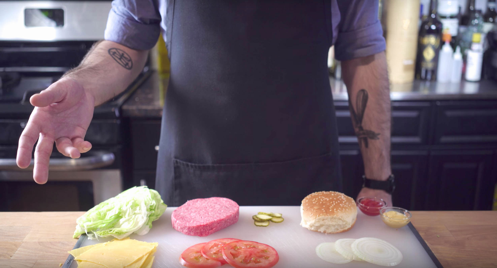

Krabby Patty

Description
A recreation of the regular Krabby Patty described in the popular cartoon show "Spongebob Squarepants"
Ingredients
- 1 pound chuck steak
- 1 pound bone-in short ribs
- Salt & pepper to taste
- 2 tsp MSG
- 2 Tbsp vegetable oil
- 2 ounces shredded iceberg lettuce
- 1 slice yellow American cheese
- 1 small vidalia onion, sliced thinly
- 1 beefsteak tomato, sliced thinly
- Ketchup to taste
- Mustard to taste
- 1 large dill pickle, sliced thinly
- 4 sesame seed hamburger buns
Instructions
- Trim and cut beef into 1-inch pieces, and spread evenly on a parchment-lined baking sheet. Place in the freezer for 15 minutes, along with the blade of a
food processor, until beef is firm. Pulse in the food processor until beef is ground and pebbly. Shape into 4 patties, and season with salt, pepper, and
MSG.
- Heat vegetable oil in a large cast iron skillet over medium-high heat until barely smoking. Add patties and reduce heat to medium - cook to desired
doneness.
- On the burger buns, assemble the burgers in this order: patty, lettuce, cheese, onion, tomato, ketchup, mustard, pickles, top bun.